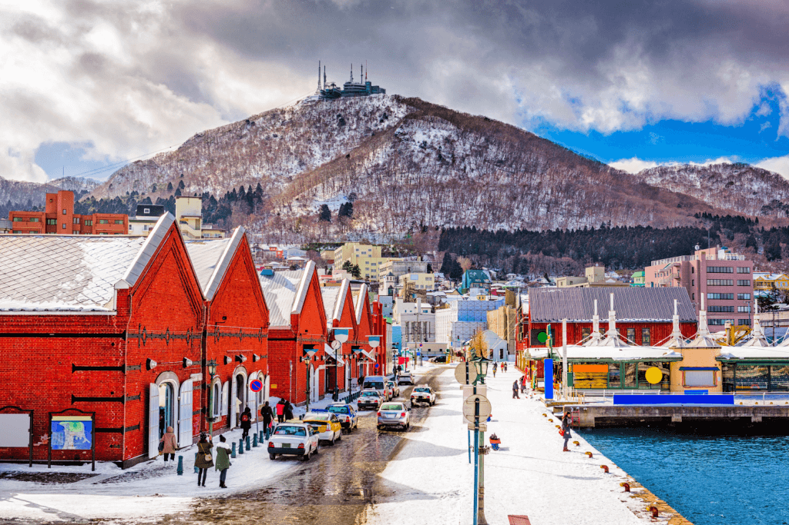
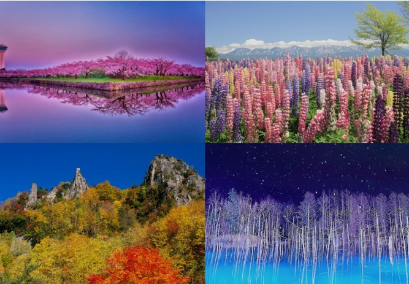
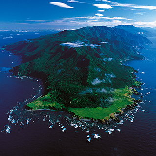
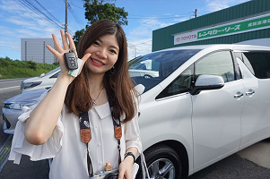
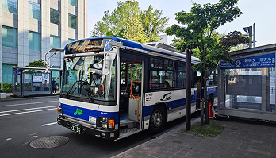
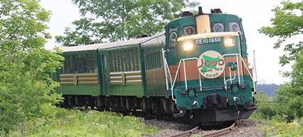
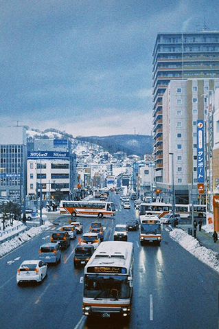

Travel Tips for Hokkaido
Helpful advice for planning your visit to Japan’s northern island.
What is the climate like?
Hokkaido’s climate varies on the specific location and season. The northernmost parts of Hokkaido have long, freezing winters and short, cool summers compared to the rest of the island.

Table of Contents
What To Wear
Hokkaido’s climate is seasonal, but some basic guidelines for clothing include wearing extensive layers of winter clothing and boots in the winter, comfortable clothing with extra layers in spring, light clothing in summer, and long-sleeves, coats, scarves, or mittens in the fall.

Sightseeing Attractions
Hokkaido offers a charming mix of urban and rural areas, as well as breathtaking natural scenery and geography. Visitors can explore cities such as Sapporo, Asahikawa, and Hakodate, or visit nature areas such as Lake Mashu, Shiretoko Peninsula, and Lake Akan.

Transportation Around Hokkaido
For those wishing to take public transportation within the cities, local buses and trains are useful options. For traveling between major cities, JR Hokkaido trains are commonly used. Renting a car can also be helpful for visiting rural areas.




Start Your Journey
Planning your first trip to Japan? Use this guide to explore Hokkaido’s top destinations and create a smooth and unforgettable travel experience.